CS184/284A Fall 2026 Homework 2 Write-Up
Link to webpage: (TODO) cal-cs184-student.github.io/hw2-katia-3-writeup
Link to GitHub repository: (TODO) github.com/cal-cs184-student/hw2-katia-3
Overview
In this homework, I built the core pieces of a small geometric modeling tool, working with two different ways of representing smooth shapes.
In Section I, I implemented de Casteljau's algorithm to evaluate Bezier curves and surfaces. For curves, each step linearly interpolates between neighboring control points until a single point on the curve remains. For surfaces, I applied the same 1D algorithm twice: first along each row of the control grid in \(u\), then along the resulting points in \(v\). This was enough to render the Utah teapot directly from its Bezier patches.
In Section II, I switched to triangle meshes stored in a half-edge data structure. I computed area-weighted vertex normals for smooth Phong shading, then implemented two local remeshing operations, edge flip and edge split, by carefully reassigning every pointer of every affected half-edge, vertex, edge, and face. Finally, I combined these operations into Loop subdivision, which upsamples a mesh by splitting each triangle into four and moving every vertex to a weighted average of its neighbors, turning a coarse mesh into a smooth one.
The most interesting thing I learned is how much the half-edge data structure makes possible with a few simple pointers. Once flip and split were correct, Loop subdivision was mostly a matter of combining them in the right order, with no new pointer manipulation. I also learned that the hardest part of mesh code is keeping the connectivity consistent rather than the math: a single stale pointer can break traversal far away from where the mistake was made. Drawing each operation before and after and labeling every element was the most reliable way to get it right. Lastly, the cube experiment showed that subdivision results depend on the mesh's connectivity, not just its shape, since the same cube subdivides lopsidedly or symmetrically depending on how its faces are triangulated.
Section I: Bezier Curves and Surfaces
Part 1: Bezier curves with 1D de Casteljau subdivision
De Casteljau's algorithm evaluates a Bezier curve at a parameter \(t \in [0, 1]\) through repeated linear interpolation. Starting from the \(n\) control points \(p_1, \dots, p_n\), we interpolate between each pair of adjacent points to get \(n - 1\) intermediate points at the next level:
\[ p_i' = \text{lerp}(p_i, p_{i+1}, t) = (1-t)\,p_i + t\,p_{i+1} \]Repeating this step on the new points shrinks the list by one each time. After \(n - 1\) levels, a single point remains, and that point lies on the Bezier curve at \(t\). Sweeping \(t\) from 0 to 1 traces out the whole curve.
I implemented one level of this in BezierCurve::evaluateStep(points) in student_code.cpp. It creates an empty std::vector<Vector2D>, loops over each adjacent pair points[i] and points[i + 1], and uses push_back to add \((1-t)\,p_i + t\,p_{i+1}\), where t is the class's member variable. It returns the new vector, which has one fewer point than the input. The GUI calls this function once each time E is pressed, so each press shows the next level.
To test it, I made my own Bezier curve with 6 control points (bzc/my_curve.bzc). The screenshots below step through each level of evaluation. White squares are the original control points, blue squares are the intermediate points, and the red square is the final evaluated point.
|
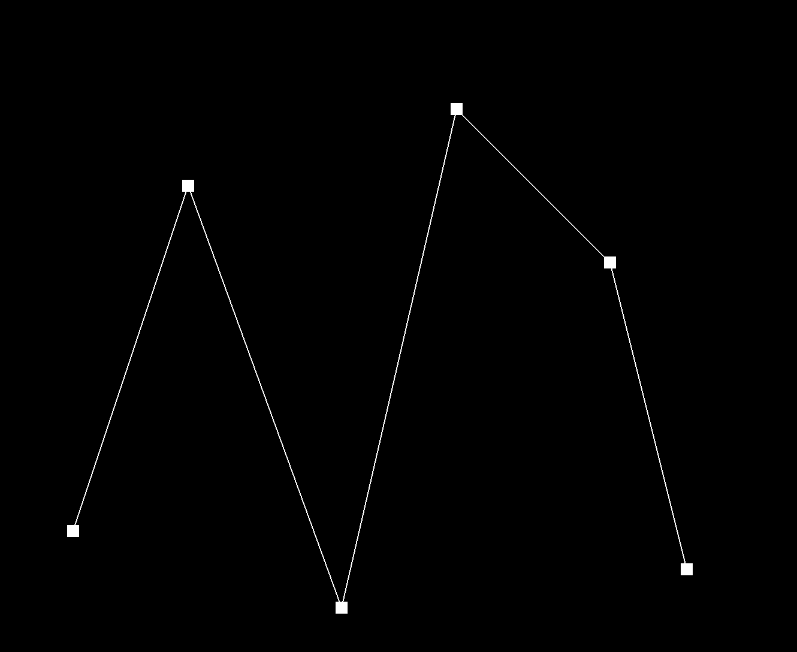 |
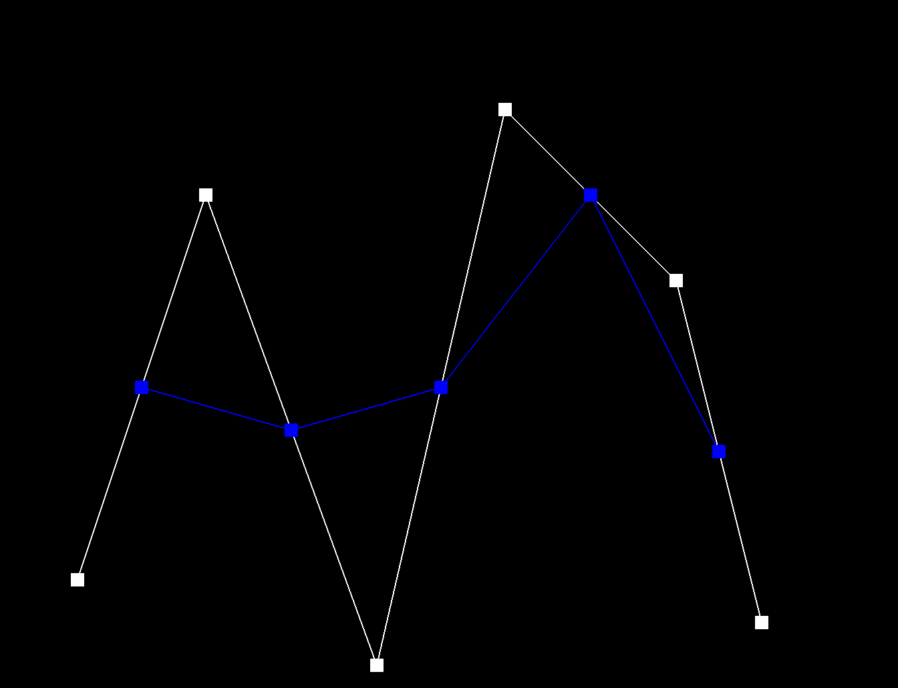 |
|
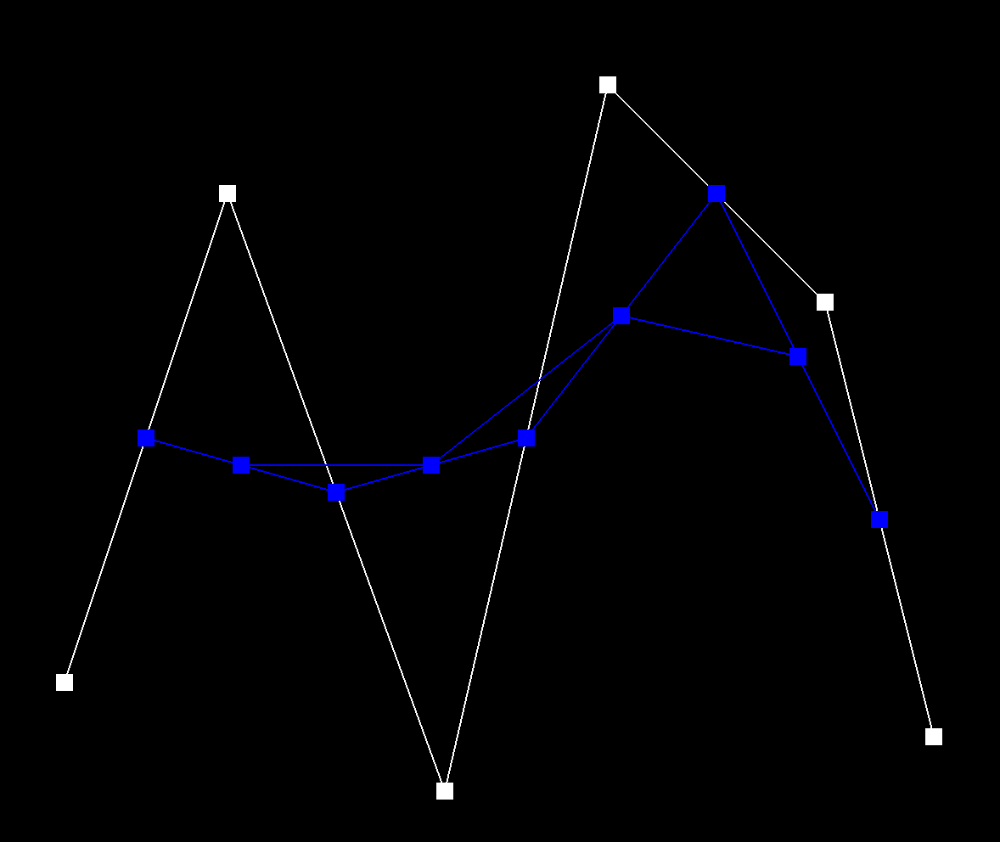 |
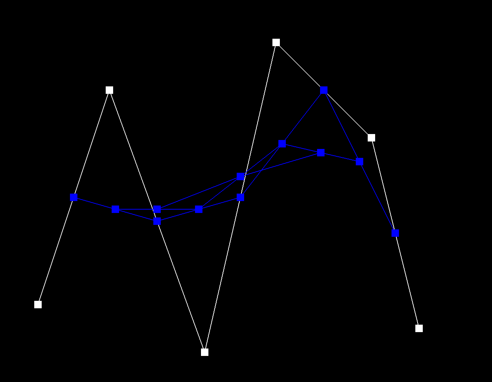 |
|
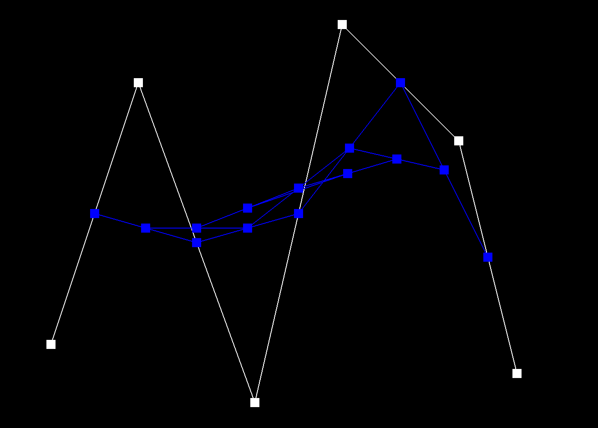 |
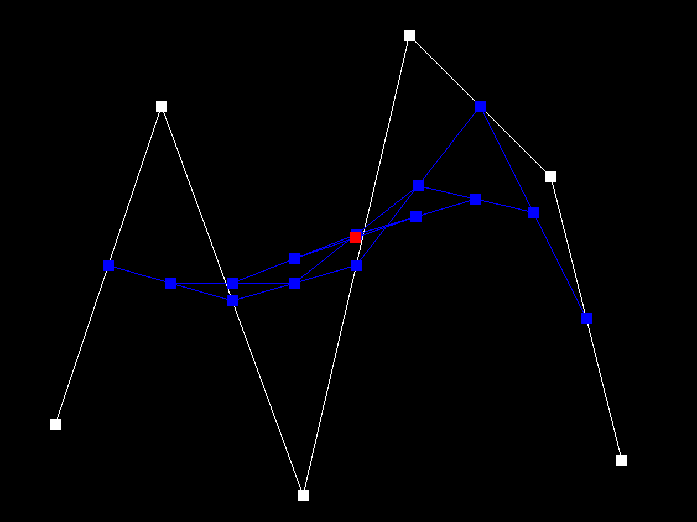 |
|
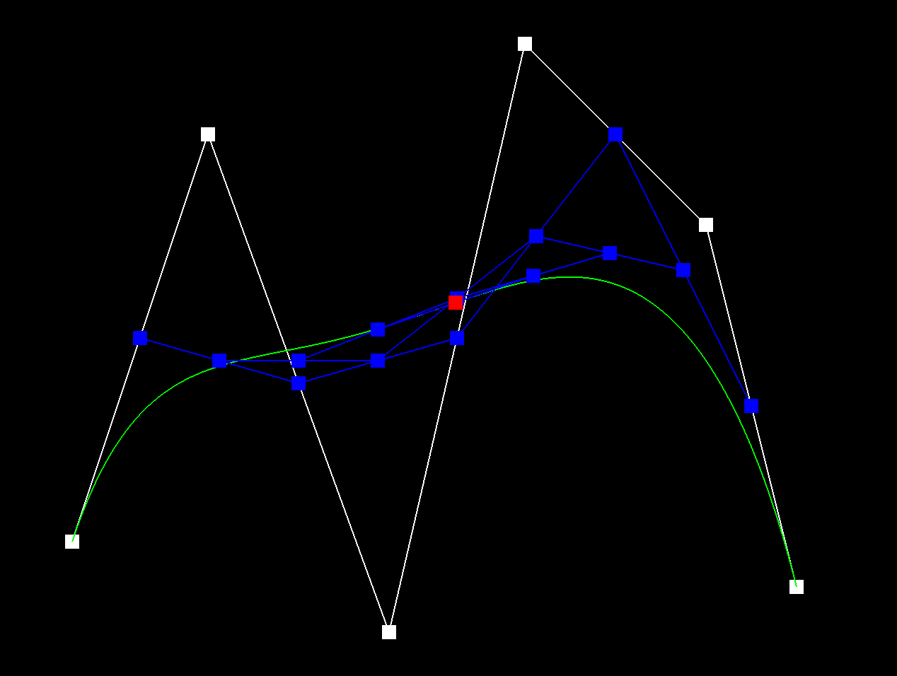 |
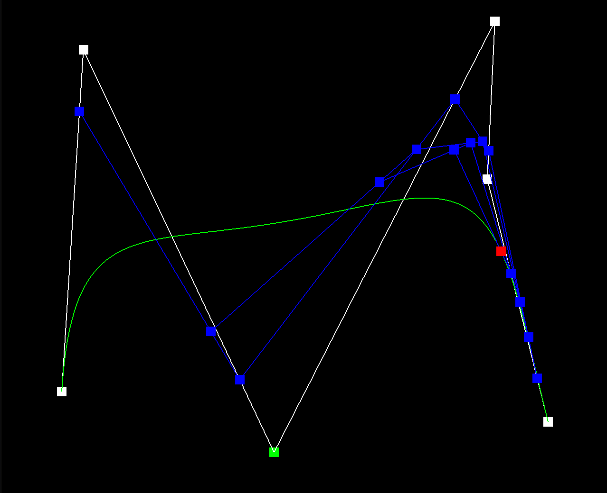 |
Part 2: Bezier surfaces with separable 1D de Casteljau
A Bezier surface of degree \((n, m)\) is defined by an \((n+1) \times (m+1)\) grid of control points \(P_{ij}\) and two parameters \(u, v \in [0, 1]\). De Casteljau's algorithm extends to surfaces because the surface is separable: we can evaluate it as a curve of curves. Each row of control points \(P_{i0}, \dots, P_{im}\) defines its own 1D Bezier curve in \(u\). Evaluating every row at \(u\) gives one point \(P_i\) per row. Those points, which run roughly along a column of the grid, define a new Bezier curve in \(v\), and evaluating that curve at \(v\) gives the final point \(P(u, v)\) on the surface.
I implemented this with three functions in student_code.cpp:
BezierPatch::evaluateStep(points, t)performs one level of de Casteljau in 3D. For each adjacent pair it computes \(p_i' = (1-t)\,p_i + t\,p_{i+1}\) and pushes it into a new vector, so \(n\) points become \(n-1\). This is the same as Part 1, except that the points areVector3Dand \(t\) is passed in as an argument instead of read from a member variable.BezierPatch::evaluate1D(points, t)fully evaluates a 1D curve. It repeatedly callsevaluateStepuntil only one point remains, then returns that point.BezierPatch::evaluate(u, v)evaluates the surface. It loops over each rowcontrolPoints[i], callsevaluate1D(controlPoints[i], u), and collects the results. It then returnsevaluate1Dof those row points at \(v\).
Below is bez/teapot.bez evaluated with my implementation, with and without the wireframe.

bez/teapot.bez with wireframe |

bez/teapot.bez without wireframe |
Section II: Triangle Meshes and Half-Edge Data Structure
Part 3: Area-weighted vertex normals
With flat shading, every point on a triangle uses that triangle's face normal, so the facets of the mesh are clearly visible. Phong shading instead interpolates normals stored at the vertices across each triangle, which gives a much smoother result. To get a good normal at a vertex, I take the normals of all the triangles touching that vertex, weight each one by its triangle's area, and normalize the sum. Larger faces have more influence, which makes the result less sensitive to small, thin triangles.
I implemented this in Vertex::normal() in student_code.cpp:
- Walking around the vertex. I start with the vertex's outgoing half-edge
h = halfedge()and step to the next outgoing half-edge withh = h->twin()->next()until I return to the start. Each step visits one face incident to the vertex. Because the function isconst, I useHalfedgeCIter. - Getting the triangle. A face only points to one half-edge, so I get its three corners from the half-edges themselves: \(a\) =
h->vertex(), \(b\) =h->next()->vertex(), and \(c\) =h->next()->next()->vertex(). - Area-weighted normal. The cross product \((b - a) \times (c - a)\) is perpendicular to the triangle, and its length is twice the triangle's area. Adding up the raw cross products therefore weights each face normal by its area automatically. The factor of 2 doesn't matter because the sum is normalized at the end.
- Orientation. Faces store their vertices in counterclockwise order, so this cross product order makes the normals point outward. Reversing the order would point them into the mesh and make the shading very dark.
- Boundaries. I skip the virtual boundary faces (
h->face()->isBoundary()), since they aren't real triangles.
Finally, I return the normalized sum with .unit().
Below is dae/teapot.dae with flat shading and with Phong shading using my vertex normals (toggled with Q).
|
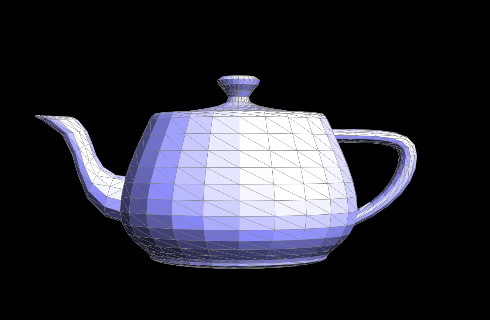 |
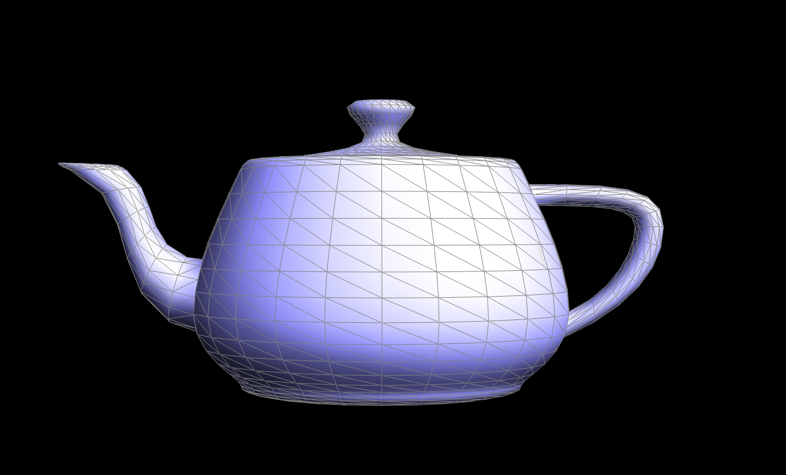 |
Part 4: Edge flip
An edge flip takes two triangles \((a, b, c)\) and \((c, b, d)\) that share the edge \((b, c)\) and replaces that edge with the other diagonal of the quadrilateral, \((a, d)\), producing the triangles \((a, d, c)\) and \((a, b, d)\). No elements are created or destroyed: the same 6 inner half-edges, 5 edges, 4 vertices, and 2 faces are reused, and only their pointers change.
I implemented this in HalfedgeMesh::flipEdge(e0) in student_code.cpp, following the spec's recommendation to write out every element before and after the flip and then reassign every pointer, even ones that don't change:
- Labeling. Starting from
h0 = e0->halfedge()(b → c), I walknext()to geth1(c → a) andh2(a → b) in facef0, and useh3 = h0->twin()(c → b) to geth4(b → d) andh5(d → c) in facef1. I also save the four outer twinsh6–h9, the vertices \(a, b, c, d\), the edgese0–e4, and the facesf0andf1. - Boundary check. If either
h0->face()orh3->face()is a boundary face, I return immediately without flipping. - Rewiring. Using
Halfedge::setNeighbors(next, twin, vertex, edge, face), I rebuildf0as the looph0(a → d) →h5(d → c) →h1(c → a), andf1ash3(d → a) →h2(a → b) →h4(b → d). Both stay counterclockwise, andh0/h3remain twins on the flipped edgee0. - Element pointers. I then reset the
halfedge()pointer of every vertex, edge, and face. The key ones are \(b\) and \(c\): each loses the outgoing half-edge it had along the old edge, so their pointers must be moved toh4andh1, or they would point to a half-edge that no longer starts at them.
This is constant work, independent of mesh size, and the function returns e0, which is now the flipped edge \((a, d)\).
The trick that helped most was drawing the two triangles before and after the flip and labeling every half-edge, then writing one setNeighbors call per half-edge directly from the drawing. Setting every pointer, instead of only the ones I thought had changed, avoided the hard-to-find bugs where one stale pointer (usually a vertex's halfedge()) breaks traversal later.
Below is dae/teapot.dae before and after several edge flips on the side of the body. Each flip swaps a quad's diagonal, so the pattern of triangles changes while the mesh stays closed with no holes. The thin dark slivers in the "after" image are long, thin triangles created by flipping a few edges in a row; the spec notes that a darker degenerate triangle is expected.
|
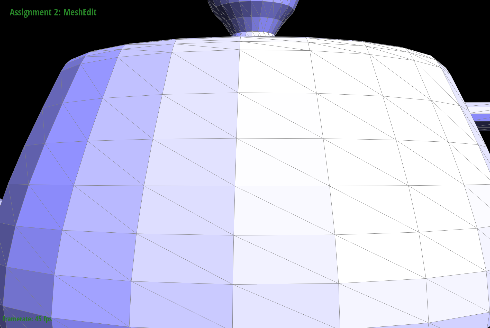 |
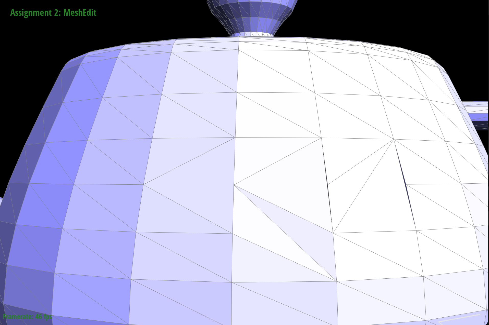 |
Part 5: Edge split
An edge split takes the same pair of triangles \((a, b, c)\) and \((c, b, d)\), inserts a new vertex \(m\) at the midpoint of the shared edge \((b, c)\), and connects \(m\) to the opposite vertices \(a\) and \(d\), turning 2 triangles into 4. Unlike a flip, a split has to create new elements: 1 vertex, 3 edges, 2 faces, and 6 half-edges.
I implemented this in HalfedgeMesh::splitEdge(e0) in student_code.cpp, using the same approach as the flip:
- Labeling. I collect the same elements as in Part 4: inner half-edges
h0–h5, outer twinsh6–h9, vertices \(a, b, c, d\), edgese0–e4, and facesf0andf1. If either face is a boundary face, I return immediately. - New elements. I create the new vertex \(m\) with
newVertex()and set its position to the midpoint \((b + c) / 2\). I then create 3 new edges (b–m, a–m, m–d), 2 new faces, and 6 new half-edges. This is exactly what the 4 triangles need, so nothing is left disconnected. - Reusing old elements. The original edge
e0becomes the m–c half of the split edge, and the old faces become \((m, c, a)\) and \((c, m, d)\). The new faces are \((b, m, a)\) and \((m, b, d)\).h0andh3stay twins alonge0, buth0now starts at \(m\) instead of \(b\). - Rewiring. As in the flip, I call
setNeighborson every half-edge in all four triangles, keeping each face counterclockwise, and then reset thehalfedge()pointer of every vertex, edge, and face. Becauseh0no longer starts at \(b\), \(b\)'s pointer has to move to the new half-edge b → m. As the starter code asks, \(m\)'s pointer goes along the split edge. - Flags for Part 6. I also mark \(m\) as new, the two halves of the original edge as not new, and the two edges from \(m\) to \(a\) and \(d\) as new. Loop subdivision uses these flags to decide which edges to flip.
The function does constant work and returns \(m\).
The most useful trick was reusing my Part 4 drawing. Since the flip and split start from the same pair of triangles, I kept the same labels for every existing element and only had to add the new ones. Drawing the four output triangles and labeling each new half-edge's direction made the setNeighbors calls straightforward to write.
Below is the same part of dae/teapot.dae before any changes, after a few edge splits, and after a mix of splits and flips. Each split adds a vertex at the midpoint of an edge and connects it to the two opposite vertices, and the mesh stays closed with no holes after mixing in flips. (The pink edge in the last image is just the edge under the cursor.)
|
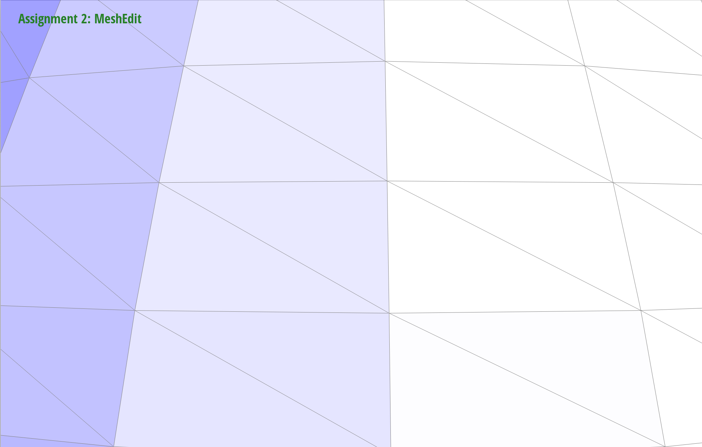 |
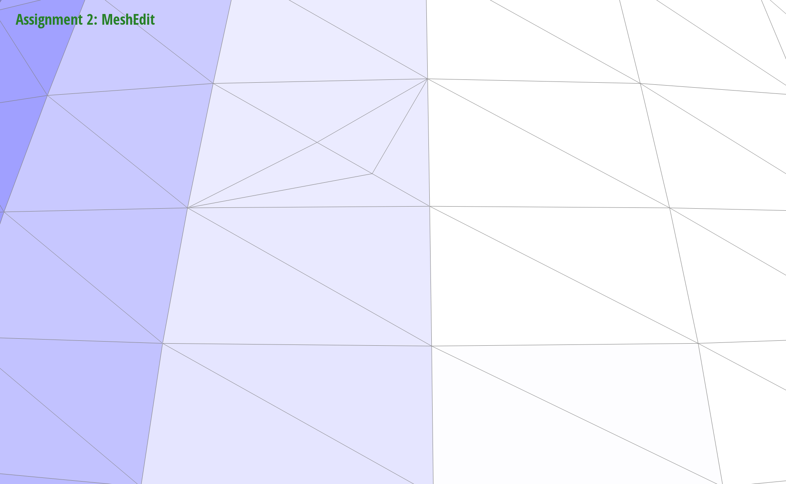 |
|
|
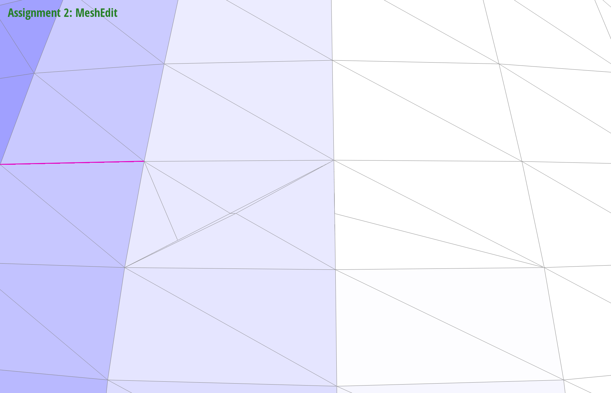 |
Part 6: Loop subdivision for mesh upsampling
Loop subdivision upsamples a triangle mesh by splitting every triangle into four (a 4-1 subdivision) and then moving every vertex to a weighted average of its neighbors. Repeating this converges to a smooth surface that approximates the original mesh. I implemented it in MeshResampler::upsample(mesh) in student_code.cpp, following the recommended order of computing all positions first, then changing the connectivity, then moving the vertices:
- Old vertex positions. For each vertex, I mark it as old (
isNew = false), walk around it withh = h->twin()->next()to sum its neighbors' positions and count its degree \(n\), and store \[ \text{newPosition} = (1 - n u)\,\text{position} + u \sum \text{neighbors} \] where \(u = 3/16\) if \(n = 3\), and \(u = 3/(8n)\) otherwise, inVertex::newPosition. - New vertex positions. For each edge \((A, B)\) with opposite vertices \(C\) and \(D\), I mark it as old and store the position of the vertex that will be inserted on it, \(\frac{3}{8}(A + B) + \frac{1}{8}(C + D)\), in
Edge::newPosition. - Split every original edge. I loop over the edges, saving the next iterator before each split as the primer recommends. An edge is original if both of its endpoints are old vertices, because every edge created by a split touches the new midpoint vertex. This stops the loop from re-splitting edges it just created. After each split, I copy the edge's stored position into the new vertex's
newPosition. - Flip new edges. I flip every edge that is marked
isNewand connects an old vertex to a new one. MysplitEdgefrom Part 5 marks the two halves of the original edge as not new and the two edges to the opposite vertices as new, so only the correct edges get flipped. Flips don't create or delete elements, so a regular loop is safe here. - Update positions. Finally, I copy
newPositionintopositionfor every vertex.
The key trick was computing all the new positions on the original, coarse mesh before changing anything. The weights must use the original positions, and traversing the coarse mesh is much simpler than traversing the subdivided one. Using vertex age to decide which edges to split, and the isNew flags set inside splitEdge to decide which edges to flip, kept the split and flip loops simple and avoided infinite loops.
Sharp corners and edges
Loop subdivision is an approximating scheme: every vertex, including the original ones, is moved toward a weighted average of its neighbors. As a result, sharp corners and edges get rounded off and the mesh shrinks with each iteration. The cube below turns into a rounded blob instead of staying a cube.
Pre-splitting edges near a sharp feature reduces this effect. Splitting the edges around a corner several times adds vertices very close to it. Each vertex is then averaged with nearby vertices that lie on the same flat faces instead of with vertices across the cube, so that region is pulled in much less. In the screenshots below, I repeatedly split the edges meeting at one corner (highlighted) before subdividing. After subdivision, the area around that corner keeps more of its shape than the rest of the cube, which rounds off evenly.
The pre-splitting also has a side effect. My splits created long, thin triangles fanning out from the far corners, and after subdivision these show up as ripples and creases in the surface. Pre-splitting preserves features best when the added edges are short and evenly spaced. Uneven splits introduce their own artifacts because Loop subdivision faithfully smooths whatever connectivity it is given.
|
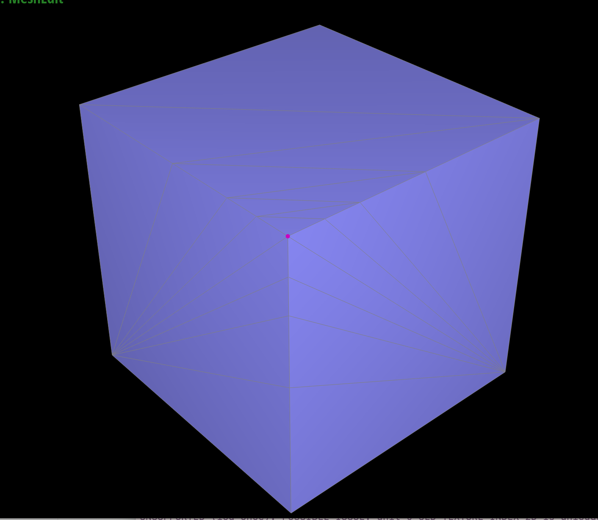 |
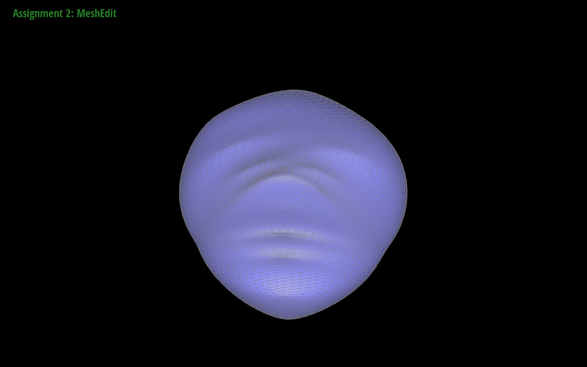 |
Asymmetry of the cube
dae/cube.dae represents each square face with two triangles, split along one diagonal. The diagonals don't run in a consistent pattern, so the corners have different degrees: they range from 3 to 6 depending on how many diagonals meet there. Since the Loop update weights depend on degree and on which neighbors a vertex has, each corner is pulled in a different direction and by a different amount. After a few subdivisions, the cube becomes visibly lopsided.
|
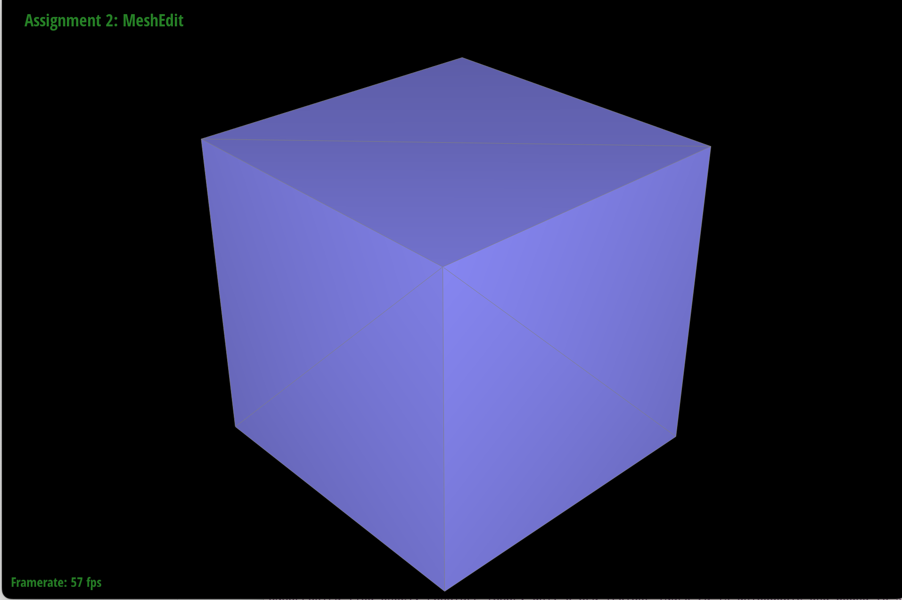 dae/cube.dae |
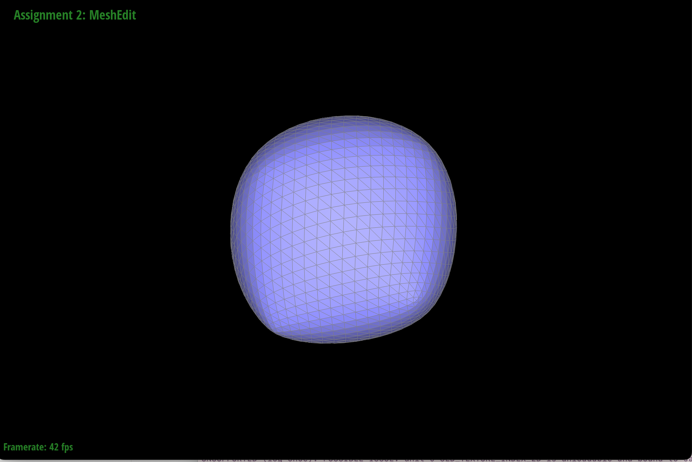 |
To fix this, I pre-processed the cube by splitting the diagonal edge on each of the 6 faces. Each face then has a vertex at its center connected to all four of its corners, so every face is split into 4 triangles in the same symmetric pattern. Every corner of the cube ends up with the same degree (6) and the same arrangement of neighbors, so the subdivision treats all corners and faces identically and the result stays symmetric.
|
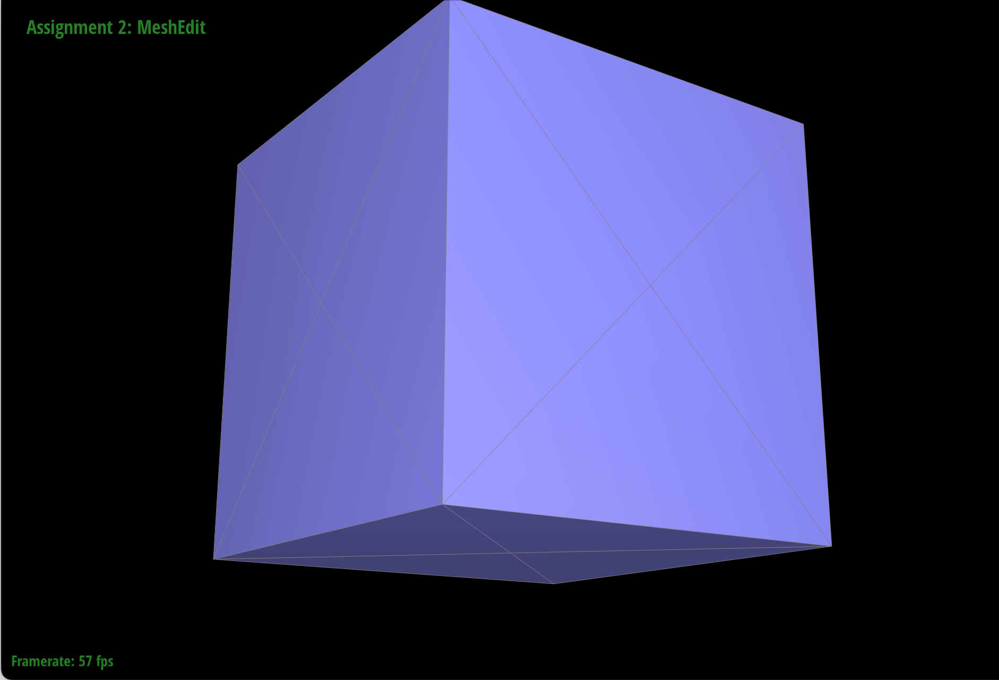 |
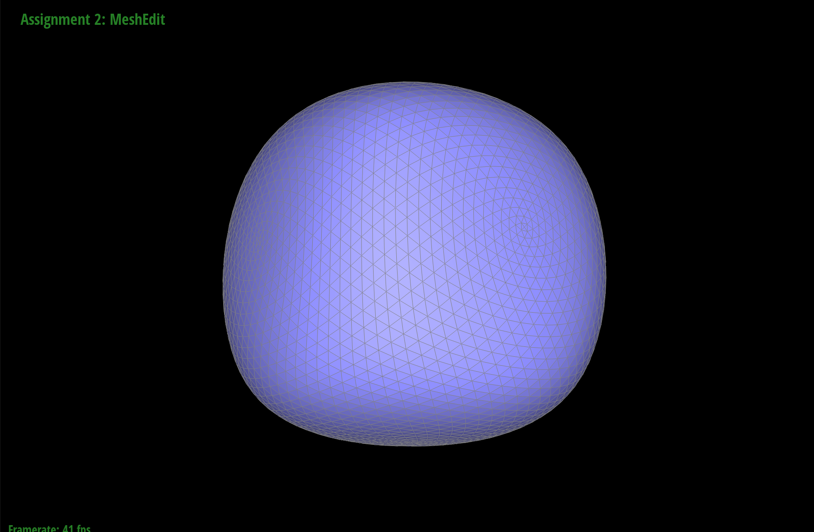 |